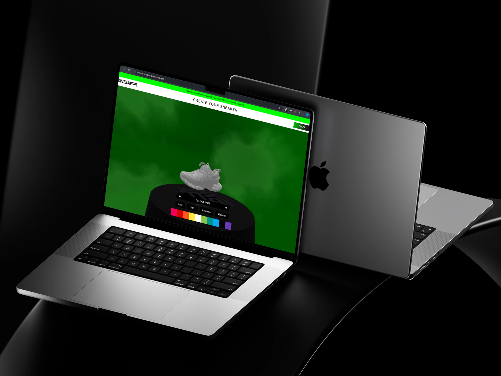

The goal of this project was to create an interactive 3D sneaker configurator that allows users to customize their sneakers in real-time. This included color options, textures, and camera interaction. I built a custom backend using Node.js & MongoDB to store configurations and implemented animations using GSAP.
View Live Project Watch Demo Video
The configurator is built using Three.js for 3D rendering, MongoDB for storing sneaker configurations, and Node.js + Express as the backend API. I also implemented GSAP for micro-interactions and smooth transitions.